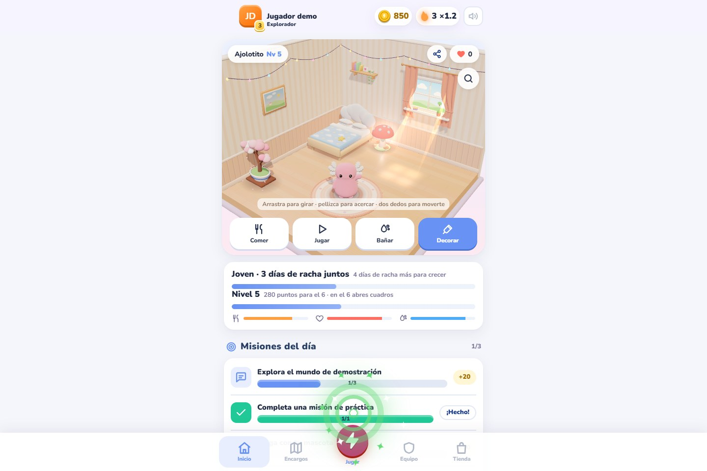

What is gamification?
Using video game mechanics (missions, points, levels, leaderboards, rewards and a character to look after) in a work activity, so that doing it well feels like progressing in a game rather than one more chore.
Distrito is a PWA (an app you install from the browser that works like a phone app) for in-store sales reps. Every day it hands them missions, ranks them in leagues and gives them a 3D pet to look after. Under the hood it reads the ERP (the company's sales and inventory system) without changing it and tells each rep which customers to call today, ranked by purchase history (an RFM model) and by a predictive model.
Private project built for a company · no public demo.

Using video game mechanics (missions, points, levels, leaderboards, rewards and a character to look after) in a work activity, so that doing it well feels like progressing in a game rather than one more chore.
Store reps serve whoever walks in, but customers who stopped buying and quotes nobody followed up on get lost, because no one reminds reps who to call and there is no incentive to do it.
Every day the app tells each rep which customers to message or call and why, and rewards that follow-up. Daily missions, leagues and the pet make them want to open it again.
See today's missions and the list of customers to contact.
Tap WhatsApp or call from the customer card: the message is already written.
Earn coins and climb the leaderboard for following up; if the customer buys, get a bonus.
Spend coins to care for and decorate the pet; the manager sees on a dashboard who is following up.
The leaderboard rewards customer follow-up done in the app, not just sales volume.
Rotating daily missions, points and coins, levels and leagues. The leaderboard counts every call and every quote handled in the app, so sales are not the only thing that matters.
A collectible card album, surprise paint buckets, prizes and a rewards shop.
Push notifications (alerts that reach the phone even when the app is closed), sign-in with a magic link (an access link, no password) or through WhatsApp via its API (the official connection for software), and emails.
A three-dimensional (3D) pet, modeled in Blender and animated with Three.js (3D graphics in the browser). You feed it, with effects that last for a while, and bathe it by scrubbing with your finger, using soaps that leave effects on its skin. It also has its own stickers.
Supports several pieces of the same type of furniture. It detects collisions and, if a piece does not fit where it is dropped, moves it to the nearest free spot.
The system reads the ERP without changing it (read-only) and uses that data to build each rep's work list.
Finds customers who stopped buying by comparing against their own purchase frequency, and leaves out segments that do not apply.
Ranks them with an RFM model, short for recency, frequency and monetary value: how recent their last purchase was, how often they buy and how much they buy. It is calibrated against the best customers.
A predictive model estimates which customers are most likely to buy soon: it scores how likely each one is to buy or request a quote in the next 30 days. It is retrained every night.
Hands unassigned customers, in turns, to the rep who specializes in that customer type, and flags quotes about to expire.
Finds leads in the business directory of INEGI (Mexico's national statistics institute), Google Maps, public tenders and the news. It matches them against the customer base by phone, RFC (Mexican tax ID) and normalized name to avoid duplicates, and looks up alternate phone numbers.
They show who opens the app and who follows up. They include a read-only dashboard per store, manager leaderboards, a results funnel and CSV export (a file that opens in Excel).
The economy is designed to reward real work and close the door on cheating.
Each quote is rewarded only once, no matter how many times it is touched.
Calling the same customer over and over does not inflate points.
New rules apply from a cutoff date and never alter what was already earned.
Assistant accounts share their rep's work list, with no duplicated customers.
Whatever you do without signal is saved and sent when the connection returns, without duplicates. Each action carries a unique key that prevents double records.
The service worker is the part that stores the app on the phone so it opens without internet. Its cache is versioned: when a new release ships, phones update without keeping stale files.
Python server with SQLite (a database in a single file), packaged with Docker (containers that run the same on any server).
Every change is tested in a QA (quality assurance) environment with test data before it reaches users.
They cover game rules, economy, sync and reports.
Screens are reviewed with screenshots taken by an automated browser (Playwright).
Browsable documentation showing which file drives each screen and each flow.
Development coordinated with several artificial intelligence agents working at the same time on separate parts.
It is a private system in production, so there is no public demo. This page summarizes what it does and how it is built.